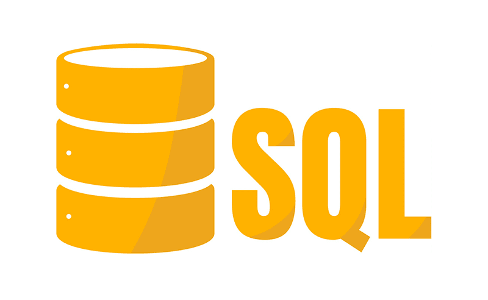
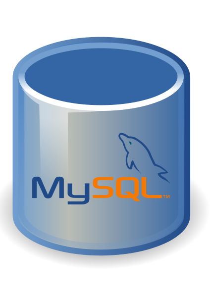

Introdução ao SQL: O que é e como funciona
SQL é uma linguagem de programação usada para gerenciar dados em bancos de dados relacionais.
Ele permite que você crie, manipule e consulte informações armazenadas em um banco de dados.
É uma das linguagens mais utilizadas no mundo do desenvolvimento de software e é uma habilidade
essencial para qualquer pessoa que trabalhe com dados.
O que é um banco de dados relacional ?
Um banco de dados relacional é uma coleção de tabelas que contêm informações organizadas em linhas e colunas.
Cada tabela representa um conjunto de informações relacionadas. Por exemplo, você pode ter uma tabela de clientes que
contém informações sobre cada cliente, como nome, endereço e número de telefone.
Cada linha em uma tabela é chamada de registro e cada coluna é chamada de campo.
Um campo representa um tipo de informação, como um número de telefone ou um endereço de e-mail.

Como o SQL funciona?
O SQL é usado para criar, alterar e consultar bancos de dados. Você pode usar o SQL para criar tabelas,
adicionar registros a uma tabela, atualizar registros existentes e excluir registros. Você também pode usar o
SQL para fazer consultas em um banco de dados para obter informações específicas.
As consultas SQL são escritas em uma linguagem que é fácil de entender e seguir. Por exemplo,
a consulta SQL a seguir selecionaria todas as informações da tabela de clientes:
SQL
SELECT
*
FROM
clientes;
Esta consulta retorna todos os registros da tabela de clientes. O asterisco (*)
é um caractere curinga que representa todas as colunas em uma tabela.
Aqui estão alguns outros exemplos de consultas SQL:
- Selecionando informações específicas da tabela de clientes:
SQL
SELECT
nome,
telefone
FROM
clientes
;
Esta consulta retorna apenas os nomes e números de telefone de todos os clientes na tabela.
- Selecionando informações da tabela de clientes onde o nome começa com "J":
SQL
SELECT
*
FROM
clientes
WHERE
nome
'J%'
;
- Adicionando um novo cliente à tabela de clientes:
SQL
INSERT
INTO
clientes
(nome,
telefone,
endereço)
VALUES
nome
(
'João Silva',
'555-1234',
'Rua dos Andradas 123'
)
;
Esta consulta adiciona um novo registro à tabela de clientes com o nome "João Silva",
o número de telefone "555-1234" e o endereço "Rua dos Andradas, 123".
- Atualizando informações da tabela de clientes para um registro específico:
SQL
UPDATE
clientes
SET
telefone=
'555-4321'
WHERE
nome=
'João Silva'
;
Esta consulta atualiza o número de telefone do registro da tabela de clientes com o nome "João Silva" para "555-4321".
- Excluindo um registro da tabela de clientes:
SQL
DELETE
FROM
clientes
WHERE
nome=
'João Silva'
;
Esta consulta exclui o registro da tabela de clientes com o nome "João Silva".

Conclusão
O SQL é uma linguagem poderosa que é usada para gerenciar dados em bancos de dados relacionais.
É fácil de aprender e é uma habilidade essencial para qualquer pessoa que trabalhe com dados.
Com o SQL, você pode criar, manipular e consultar bancos de dados para obter as informações de que precisa.